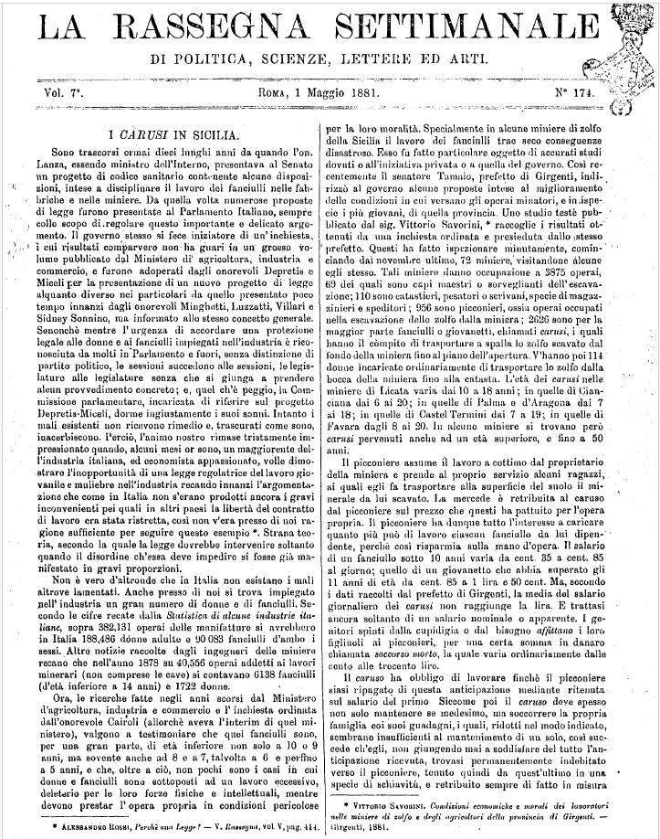
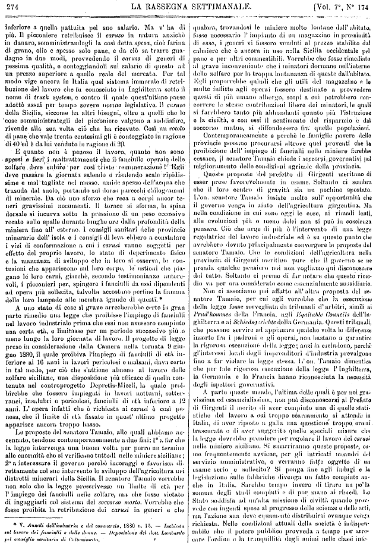
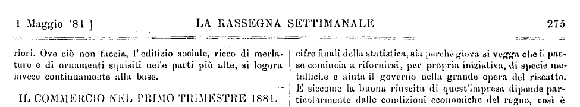
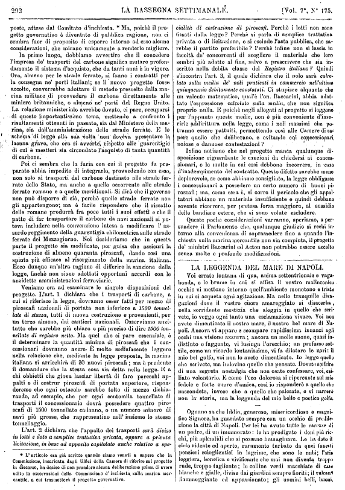
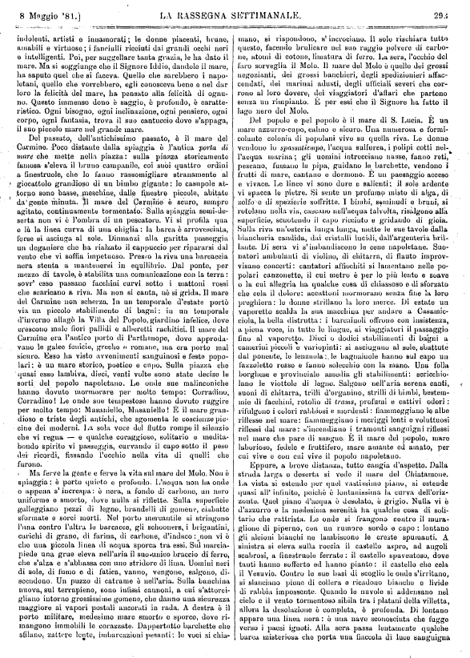
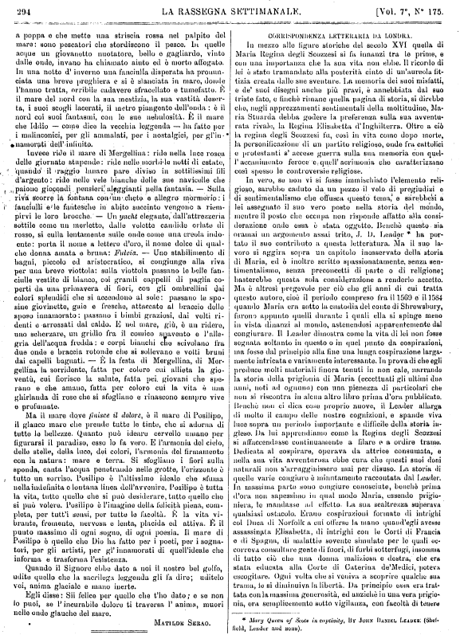
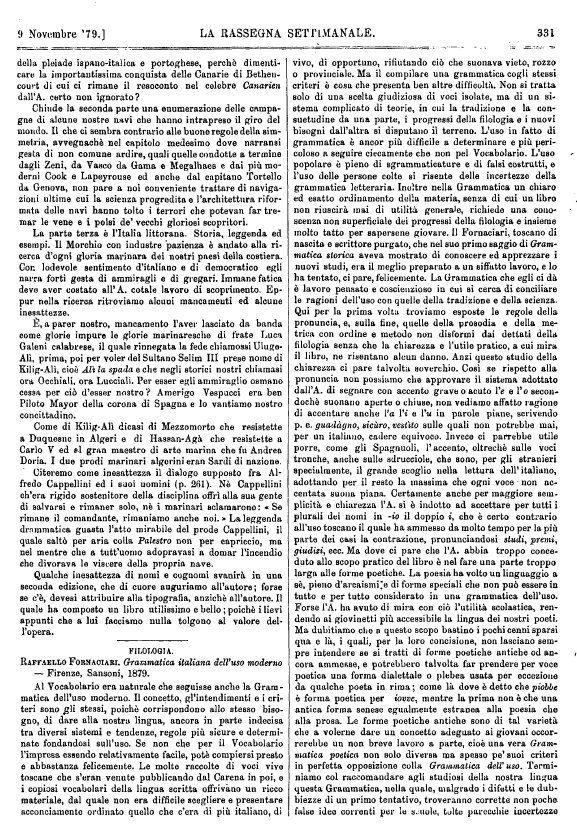
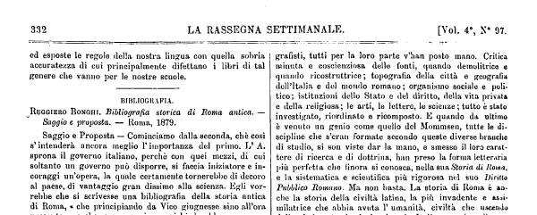

Metadati
Titolo:
Autore: Anonimo
Editore: La Rassegna Settimanale
Ente responsabile: Università di Pisa
Responsabilità: Codifica a cura di - Steve Landry Ndjock
Casa editrice: LA RASSEGNA SETTIMANALE DI POLITICA, SCIENZE, LETTERE ED ARTI.
Luogo di pubblicazione:
Data: 1881-05-01
Volume: 7
Numero:
Pagine:

I CARUSI IN SICILIA.
Sono trascorsi ormai dieci lunghi anni da quando l'on. Lanza, essendo ministro dell'Interno, presentava al Senato un progetto di codice sanitario contenente alcune disposizioni, intese a disciplinare il lavoro dei fanciulli nelle fabbriche e nelle miniere. Da quella volta numerose proposte di legge furono presentate al Parlamento Italiano, sempre collo scopo di regolare questo importante e delicato argomento. Il governo stesso si fece iniziatore di un'inchiesta, i cui risultati comparvero non ha guari in un grosso volume pubblicato dal Ministero di agricoltura, industria e commercio, e furono adoperati dagli onorevoli Depretis e Miceli per la presentazione di un nuovo progetto di legge alquanto diverso nei particolari da quello presentato poco tempo innanzi dagli onorevoli Minghetti, Luzzatti, Villari e Sidney Sonnino, ma informato allo stesso concetto generale. Senonchè mentre l'urgenza di accordare una protezione legale alle donne e ai fanciulli impiegati nell'industria è riconosciuta da molti in Parlamento e fuori, senza distinzione di partito politico, le sessioni succedono alle sessioni, le legislature alle legislature senza che si giunga a prendere alcun provvedimento concreto; e, quel ch'è peggio, la Commissione parlamentare, incaricata di riferire sul progetto Depretis-Miceli, dorme ingiustamente i suoi sonni. Intanto i mali esistenti non ricevono rimedio e, trascurati come sono, inacerbiscono. Perciò, l'animo nostro rimase tristamente impressionato quando, alcuni mesi or sono, un maggiorente dell'industria italiana, ed economista appassionato, volle dimostrare l'inopportunità di una legge regolatrice del lavoro giovanile e muliebre nell'industria recando innanzi l'argomentazione che come in Italia non s' erano prodotti ancora i gravi inconvenienti pei quali in altri paesi la libertà del contratto di lavoro era stata ristretta, così non v'era presso di noi ragione sufficiente per seguire questo esempio *. Strana teoria, secondo la quale la legge dovrebbe intervenire soltanto quando il disordine ch'essa deve impedire si fosse già manifestato in gravi proporzioni.
Non è vero d'altronde che in Italia non esistano i mali altrove lamentati. Anche presso di noi si trova impiegato nell'industria un gran numero di donne e di fanciulli. Secondo le cifre recate dalla Statistica di alcune industrie italiane, sopra 382,131 operai delle manifatture si avrebbero in Italia 188,486 donne adulte e 90083 fanciulli d'ambo i sessi. Altre notizie raccolte dagli ingegneri delle miniere recano che nell'anno 1878 su 40,556 operai addetti ai lavori minerari (non comprese le cave) si contavano 6138 fanciulli (d'età inferiore a 14 anni) e 1722 donne.
Ora, le ricerche fatte negli anni scorsi dal Ministero d'agricoltura, industria e commercio e l'inchiesta ordinata dall'onorevole Cairoli (allorché aveva l'interim di quel ministero), valgono a testimoniare che quei fanciulli sono, per una gran parte, di età inferiore non solo a 10 o 9 anni, ma sovente anche ad 8 e a 7, talvolta a 6 e perfino a 5 anni, e che, oltre a ciò, non pochi sono i casi in cui donne e fanciulli sono sottoposti ad un lavoro eccessivo, deleterio per le loro forze fisiche e intellettuali, mentre devono prestar l'opera propria in condizioni pericolose
Il picconiere assume il lavoro a cottimo dal proprietario della miniera e prende al proprio servizio alcuni ragazzi, ai quali egli fa trasportare alla superficie del suolo il minerale da lui scavato. La mercede è retribuita al caruso dal picconiere sul prezzo che questi ha pattuito per l'opera propria. Il picconiere ha dunque tutto l'interesse a caricare quanto più può di lavoro ciascun fanciullo da lui dipendente, perché così risparmia sulla mano d'opera. Il salario di un fanciullo sotto 10 annivaria da cent. 35 a cent. 85 al giorno; quello di un giovanetto che abbia superato gli 11 anni di età da cent 85 a 1 lira e 50 cent. Ma, secondo i dati raccolti dal prefetto di Girgenti, la media del salario giornaliero dei carusi non raggiunge la lira. E trattasi ancora soltanto di un salario nominale o apparente. I genitori spinti dalla cupidigia o dal bisogno affittano i loro figliuoli ai picconieri, per una certa somma in danaro chiamata soccorso morto, la quale varia ordinariamente dalle cento alle trecento lire.
IL caruso ha obbligo di lavorare finché il picconiere siasi ripagato di questa anticipazione mediante ritenuta sul salario del primo Siccome poi il caruso deve spesso non solo mantenere se medesimo, ma soccorrere la propria famiglia coi suoi guadagni, i quali, ridotti nel modo indicato, sembrano insufficienti al mantenimento di un solo, così succede ch'egli, non giungendo mai a soddisfare del tutto l'anticipazione ricevuta, trovasipermanentemente indebitato verso il picconiere, tenuto quindi da quest'ultimo in una specie di schiavitù, e retribuito sempre di fatto in misura

E quanto non è penoso il lavoro, quanto non sono spessi e fieri i maltrattamenti che il fanciullo operaio delle zolfare deve subire per così triste remunerazione ! Egli deve passare la giornata salendo è risalendoscale ripidissime e mal tagliate nel masso, umide spesso dell'acqua che trasuda dal suolo, portando sul dorso parecchi chilogrammi di minerale. Da ciò uno sforzo che reca a corpi ancor teneri gravissimi nocumenti. Il torace si sforma, la spina dorsale si incurva sotto la pressione di un peso eccessivo recato sulle spalle durante lunghe ore dalla profondità della miniera lino all' esterno. I consigli sanitari dello provincie minerarie dell' isola o i consigli di levaebbero a constatare i vizi di conformazione a cui i carusivanno soggetti per effetto del proprio lavoro, lo stato di deperimento fisico e la mancanza di sviluppo che in loro si osserva, le contusioni che appariscono sul loro corpo, le ustioni che piagano le loro carni, giacché, secondo testimonianze autorevoli, i picconieri per, spingere i fanciulli da essi dipendenti ad opera più sollecita, talvolta accostano perfino la fiamma delle loro lampade alle membra ignude di questi.*
A uno stato di cose sì grave arrecherebbe certo in gran parte rimedio una legge che proibisse l'impiego di fanciulli nel lavoro industriale prima che essi non avessero compiuto una certa età, e limitasse per un periodo successivo più o meno lungo la loro giornata di lavoro. Il progetto di leggepreso in considerazione dalla Camera nella tornata 9 giugno 1880, il quale proibiva l'impiego di fanciulli di età inferiore ai 16 anni in lavori pericolosi o malsani, dava certo in tal modo, per ciò che s'attiene almeno al lavoro delle zolfaro siciliane, una disposizione più efficace di quella contenuta nel controprogetto Depretis-Miceli, la quale proibirebbe che fossero impiegati in lavori notturni, sotterranei, insalubri e pericolosi, fanciulli di età inferiore a 12 anni. L' opera infatti che é richiesta ai carusi è così penosa, che il limite di etàfissato in quest' ultimo progetto apparisee ancora troppo basso.
Le proposte del senatore Tamaio, alle quali abbiamo accennato, tendono contemporaneamente a due fini: 1° a far che la leggeintervenga una buona volta per porre un termino alle enormità che si verificano tuttodì nello miniere siciliano ; 2° a interessare il governo perchè incoraggi e favorisca direttamente col suo intervento lo sviluppo dell'agricoltura nei distretti minerari della Sicilia. Il senatore Tamaiovorrebbe non solo che la leggeprescrivesse un limito di età per l' impiego dei fanciulli nelle zolfaro, ma che fosse vietato di ingaggiarli col sistema del soccorso morto. Vorrebbe che fosse proibita la retribuzione dei carusi in generi e che
Contemporaneamente e perchè le famiglie povere delle provincie possano procurarsi altrove quei proventi che la proibizione dell'impiego di fanciulli nelle minierefarebbe cessare, il senatore Tamaiochiede i soccorsi governativi pel miglioramento delle condizioni agricole della provincia.
Queste proposte del prefetto di Girgentimeritano di esser prese favorevolmente in esame. Soltanto ci sembra che il loro centro di gravità sia un pochino spostato. L'on. senatore Tamaioinsiste molto sull' opportunità che il governovenga in aiuto dell'agricoltura girgentina. Ma nella condizione in cui sono oggi le cose, ai rimedi lenti, alle evoluzioni più o meno dolci non si può in coscienza pensare. Ciò che urge di più è l'intervento di una legge regolatrice del lavoro industriale ed è su questo punto che avrebbero dovuto principalmente convergere le proposte del senatore Tamaio. Che le condizioni dell'agricoltura nella provincia di Girgentimeritino pure, che il governo se ne prenda qualche pensiero noi non vogliamo qui disconoscere del tutto. Soltanto ci preme di far notare che questo rimedio va considerato per ora come essenzialmente sussidiario.
Non ci associamo poi affatto all'altra proposta del senatore Tamaio, per cui egli vorrebbe che la esecuzione della legge fosse sorvegliata da tribunali d'arbitri, simili ai Prud'hommes della Francia, agli Equitable Councils dell'Inghilterra e ai Schiedsgerichte della Germania. Questi tribunali, che possono servire ad appianare qualche volta le differenze insorte fra i padroni e gli operai, non bastano a garantire la rigorosa esecuzione della legge; anzi la escludono, perchè gl'interessi locali degli imprenditori d'industriaprevalgono fino a far violare la legge stessa. L'on. Tamaiodimentica che per tale rigorosa esecuzione della legge lInghilterra, la Germania e la Francia hanno riconosciuta la necessità degli ispettori governativi.
A parte queste mende, l'ultima delle quali è per noi gravissima ed essenzialissima, non può disconoscersi al Prefetto di Girgenti il merito di aver compiuto una di quelle statistiche del lavoro a cui troppo scarsamente si attende in Italia, di aver riposto a galla una questione troppo, ormai trascurata e di aver suggerito quelle speciali misure che la legge dovrebbe prendere per regolare il lavoro dei carusi nelle miniere siciliane. Si smarriranno queste proposte, come frequentemente avviene, per gli intricati meandri del servizio amministrativo, o verranno fatte oggetto di un esame serio o sollecito? Si ponga fine agli indugi e la legislazione sulle fabbrichedivenga un fatto compiuto anche in Italia. Sarebbe tempo invero di tirare un po' la somma degli studi compiuti e di por mano ai rimedi. Lo Statosoddisfa ad un'alta missione di civiltà quando provvede con ingenti spese al progresso delle scienze e delle arti, ma l'azione sua deve equamente distribuirsi ovunque venga richiesta. Nelle condizioni attuali della società è indispensabile che il potere pubblicoprovveda a tempo per arrecare l'ordine e la tranquillità degli animi nelle classi inferiori. Ove ciò non faccia, l'edifizio sociale, ricco di merlature e di ornamenti squisiti nelle parti più alte, si logora invece continuamente alla base.

Metadati
Titolo:
Autore: MATILDE SERAO
Editore: La Rassegna Settimanale
Ente responsabile: Università di Pisa
Responsabilità: Codifica a cura di - Steve Landry Ndjock
Casa editrice: LA RASSEGNA SETTIMANALE.
Luogo di pubblicazione:
Data: 1881-05-08
Volume: 7
Numero:
Pagine:

LA LEGGENDA DEL MARE DI NAPOLI.
Voi errate lontana di qua, anima settentrionale e vagabonda, e le brume in cui si affisa il vostro malinconico occhio vi mettono intorno quell'ambiente monotono e triste in cui si acqueta ogni agitazione. Ma nelle tranquille divagazioni dove il vostro cuore amareggiato si disacerba, nella sorridente mestizia che aleggia in quello che scrivete, io veggo ogni tanto una esclamazione vivace. Voi non avete dimenticato il nostro mare, il nostro bel mare di Napoli. Ancora vi appare e scompare rapidissima innanzi agli occhi una visione azzurra; ancora un molle suono, quasi indistinto e fuggente, vi lusinga l'orecchio; un profumo sottile, come un ricordo lontanissimo, vi fa dilatare le nari: il mio bel golfo, voi non lo avete dimenticato. Io leggo quello che scrivete, ma indovino quello che pensate. Dovete soffrire di una segreta nostalgia che non osate confessare, voi, esiliato volontario. E come l'eco dolorosa si ripercuote sul mio fedele e forte cuore d'amica, così io risponderò a quello che nascondete, invece che a quello che palesate, e vi narrerò non la storia, ma la leggenda del mio bello e poetico golfo.
Ognuno sa che Iddio, generoso, misericordioso e magnifico Signore, ha guardato sempre con un occhio di predilezione la città di Napoli. Per lei ha avuto tutte le carezze di un padre, di un innamorato: le ha prodigato i doni più ricchi, più splendidi che si possano immaginare. Le ha dato il cielo ridente ed aperto, raramento turbato da quei funesti pensieri scioglientisi in lagrime, che sono le nubi; l'aria leggiera, benefica e vivificante che mai non diventa troppa rude, troppo tagliente; le colline verdi macchiate di case bianche e gialle, divise dai giardini sempre fioriti; il vulcano fiammeggiante ed appassionato; gli uomini belli, buoni,indolenti, artisti e innamorati; le donne piacenti, brune, amabili e virtuose; i fanciulli ricciuti dai grandi occhi neri e intelligenti. Poi, per suggellare tanta grazia, le ha dato il mare. Ma si soggiunge che il Signore Iddio, dandole il mare, ha saputo quel che si faceva. Quello che sarebbero i napoletani, quello che vorrebbero, egli conosceva bene e nel darloro la felicità del mare, ha pensato alla felicità di ognuno. Questo immenso dono è saggio, è profondo, è caratteristico. Ogni bisogno, ogni inclinazione, ogni pensiero, ogni corpo, ogni fantasia, trova il suo cantuccio dove s'appaga, il suo piccolo mare nel grande mare.

Del passato, dell'antichissimo passato, è il mare del Carmine. Poco distante dalla spiaggia è l'antica porta di mare che mette nella piazza: sulla piazza storicamente famosa s'eleva il bruno campanile, coi suoi quattro ordini a finestruole, che lo fanno rassomigliare stranamente al giocattolo grandioso di un bimbo gigante: le casupole attorno sono basse, meschine, dalle finestre piccole, abitate da gente minuta. Il mare del Carmine è scuro, sempre agitato, continuamente tormentato. Sulla spiaggia semideserta non vi è l'ombra di un pescatore. Vi si profila qua e là la linea curva di una chiglia: la barca è arrovesciata, forse si asciuga al sole. Dinnanzi alla garittapasseggia un doganiere che ha rialzato il cappuccio per ripararsi dal vento che vi soffia impetuoso. Presso la riva una barcaccia nera stenta a mantenersi in equilibrio. Dal ponte, per mezzo di tavole, è stabilita una comunicazione con la terra: sovr' esso passanofacchinicurvi sotto i mattoni rossi che scaricano a riva. Ma non si canta, nè si grida. Il mare del Carmine non scherza. In un temporale d'estateportò via un piccolo stabilimento di bagni: in un temporale d'invernoallagò la Villa del Popolo, giardino infelice, dove crescono male fiori pallidi e alberetti rachitici. Il mare del Carmine era l'antico porto di Parthenope, dove approdavano le galee fenicie, greche, romane; ma era porto mal sicuro. Esso ha vistoavvenimenti sanguinosi e feste popolari: è un mare storico, poetico e cupo. Sulla piazza che quasi esso lambiva, dieci, venti volte sono state decise le sorti del popolo napoletano. Le onde sue malinconiche hanno dovuto mormorare per molto tempo: Corradino, Corradino! Le onde sue tempestose hanno dovuto ruggire per molto tempo: Masaniello, Masaniello! E il mare grandioso e triste degli antichi, che sgomenta le coscienze piccine dei moderni. La sola voce del fluttorompe il silenzio che vi regna e qualche coraggioso, solitario e meditabondo spirito vi passeggia, curvando il capo sotto il peso dei ricordi, fissando l'occhio nella vita di quelli che furono.
Ma ferve la gente e ferve la vita sul mare del Molo. Non è spiaggia: è porto quieto e profondo. L'acqua non ha onde o appena s'increspa: è nera, a fondo di carbone, un nero uniforme e smorto, dove nulla si riflette. Sulla superficie galleggianopezzi di legno, brandelli di gomene, ciabatte sformate e sorci morti. Nel porto mercantile si stringono l'una contro l'altra le barcacce, gli schooners, i brigantini, carichi di grano, di farina, di carbone, d'indaco: non vi è che una piccola linea di acqua sporca tra essi. Sul marciapiede una grueeleva nell'aria il suo unico braccio di ferro, che s'alza e s'abbassa con uno stridore di lima. Uomini neri di sole, di fumo e di fatica, vanno, vengono, salgono, discendono. Un puzzo di catrame è nell'aria. Sulla banchina nuova, sul terrapieno, sono infissi cannoni, a cui s'attorcigliano intorno grossissime gomene, che danno una sicurezza maggiore ai vapori postaliancorati in rada. A destra è il porto militare, medesimo mare smorto e sporco, dove rimangono immobili le corazzate. Dappertutto barchette che sfilano, zattere lente, imbarcazioni pesanti: le voci si chiamano, si rispondono, s'incrociano. Il sole rischiara tutto questo, facendo brulicare nel suo raggio polvere di carbone, atomi di cotone, limatura di ferro. La sera, l'occhio del farosorveglia il Molo. Il mare del Molo è quello dei grossi negozianti, dei grossi banchieri, degli spedizionieri affaccendati, dei marinai adusti, degli ufficiali severi che corrono al loro dovere, dei viaggiatori d'affari che partono senza un rimpianto. E per essi che il Signore ha fatto il lago nero del Molo.
Del popolo e pel popolo è il mare di S. Lucia. È un mare azzurro-cupo, calmo e sicuro. Una numerosa e formicolante colonia di popolanivive su quella riva. Le donne vendono lo spassatiempo, l'acqua sulfurea, i polipi cotti nell'acqua marina; gli uomini intrecciano nasse, fanno reti, pescano, fumano la pipa, guidano le barchette, vendono i frutti di mare, cantano e dormono. É un paesaggio acceso e vivace. Le linee vi sono dure e salienti: il sole ardente vi spacca le pietre. Si sente un profumo misto di alga, di zolfo e di spezierie soffritte. I bimbi, seminudi e bruni, si rotolano nella via, cascano nell'acqua talvolta, risalgono alla superficie, scuotendo il capo ricciuto e gridando di gioia. Sulla riva un'osteria lunga lunga, mette le sue tavole dalla biancheria candida, dai cristalli lucidi, dall'argenteria brillante. Di sera vi s'imbandiscono le cene napoletane. Suonatori ambulanti di violino, di chitarra, di flautoimprovvisano concerti: cantatori affiochiti si lamentano nelle popolari canzonette, il cui metro è per lo più lento e soave o la cui allegria ha qualche cosa di chiassoso e di sforzato che cela il dolore: accattonimormorano senza fine la loro preghiera: le donne strillano la loro merce. Di estate un vaporettoscalda la sua macchina per andare a Casamicciola, la bella distrutta: i barcaiuolioffrono con insistenza, a piena voce, in tutte le lingue, ai viaggiatori il passaggio fino al vaporetto. Dieci o dodici stabilimenti di bagni a camerini piccoli e variopinti: si asciugano al sole, sbattute dal ponente, le lenzuola: le bagnaiuolehanno sul capo un fazzoletto rosso e fanno solecchio con la mano. Una folla borghese e provincialeassedia gli stabilimenti: scricchiolano le viottole di legno. Salgono nell'aria serena canti, suoni di chitarra, trilli d'organino, strilli di bimbi, bestemmie di facchini, rotolio di trams, profumi e cattivi odori: rifulgono i colori rabbiosi e mordenti: fiammeggiano le albe riflesse nel mare: fiammeggiano i meriggi lenti e voluttuosi riflessi dal mare: s'incendiano i tramonti sanguigni riflessi nel mare che pare di sangue. È il mare del popolo, mare laborioso, fedele e fruttifero, mare amante ed amato, per cui vive e con cui vive il popolo napoletano.
Eppure, a breve distanza, tutto cangia d'aspetto. Dalla strada larga e deserta si vede il mare del Chiatamone. La vista si estende per quel vastissimo piano, si estende quasi all'infinito, poichè è lontanissima la curva dell'orizzonte. Quel piano d'acqua è desolato, è grigio. Nulla vi è d'azzurro e la medesima serenità ha qualche cosa di solitario che rattrista. Le onde si frangono contro il muraglione di piperno, con un rumore sordo e cupo: lontano gli alcioni bianchi ne lambiscono le creste spumanti. A sinistra si eleva sulla roccia il castello aspro, ad angoli scabrosi, a finestruole ferrate: il castello spaventoso, dove tanti hanno sofferto ed hanno pianto: il castello che cela il Vesuvio. Contro le sue basi di scoglio le onde s'irritano, si slanciano piene di collera e ricadono bianche e livide di rabbia impossente. Quando le nuvole si addensano nel cielo e il vento tormentososibila tra i platani della villetta, allora la desolazione è completa, è profonda. Di lontano appare una linea nera: è una nave sconosciuta che fugge verso i paesi ignoti. Alla sera passa lentamente qualche barca misteriosa che porta una fiaccola di luce sanguigna a poppa e che mette una striscia rossa nel palpito del mare: sono pescatori che stordiscono il pesce. In quelle acque un giovanetto nuotatore, bello e gagliardo, vinto dalle onde, invano ha chiamato aiuto ed è morto affogato. In una notte d'inverno una fanciulla disperata ha pronunziata una breve preghiera e si è slanciata in mare, donde l'hanno tratta, orribile cadavere sfracellato e tumefatto. È il mare del nord con la sua mestizia, la sua vastità deserta, i suoi scogli lacerati, il metro piangente dell'onda: è il nord coi suoi fantasmi, con le sue nebulosità. È il mare che Iddio — come dice la vecchia leggenda — ha fatto per i malinconici, per gli ammalati, per i nostalgici, per gl'innamorati dell'infinito.

Invece ride il mare di Mergellina: ride nella luce rosea delle giornate stupende: ride nelle morbide notti di estate, quando il raggio lunaro pare diviso in sottilissimi fili d'argento: ride nelle vele bianche delle sue navicelle che paionogiocondi pensieri aleggianti nella fantasia. Sulla riva scorre la fontana con un cheto e allegro mormorio: i fanciulli e le fantesche in abito succintovengono a riempirvi le loro brocche. Un yacht elegante, dall'attrezzeria sottile come un merletto, dalle valette candide orlate di rosso, si culla lentamente sulle onde come una creola indolente: porta il nome a lettere d'oro, il nome dolce di qualche donna amata e bruna: Fulvia. Uno stabilimento di bagni, piccolo ed aristocratico, si congiunge alla riva per una breve viottola: sulla viottola passano le belle fanciulle vestite di bianco, coi grandi cappelli di paglia coperti da una primavera di fiori, con gli ombrellini dai colori splendidi che si accendono al sole: passano le sposine giovinette, gaie e fresche, attaccate al braccio dello sposo innamorato: passano i bimbi graziosi, dai volti ridenti e arrossati dal caldo. E nel mare, giù, è un ridere, uno scherzare, un gridio fra il comico spavento e l'allegria dell'acqua fredda: e corpi bianchi che scivolano fra due onde e braccia rotonde che si sollevano e volti bruni dai capelli bagnati. — È la festa di Mergellina, di Mergellina la sorridente, fatta per coloro cui allieta la gioventù, cui fiorisce la salute, fatta pei giovani che sperano e che amano, fatta per coloro cui la vita è una ghirlanda di rose che si sfogliano e rinascono sempre vive e profumate.
Ma il mare dove finisce il dolore, è il mare di Posilipo, il glauco mare che prende tutte le tinte, che si adorna di tutte le bellezze. Quanto può ideare cervello umano per figurarsi il paradiso, esso lo fa vero. È l'armonia del cielo, delle stelle, della luce, dei colori, l'armonia del firmamento con la natura: mare e terra. Si sfogliano i fiori sulla sponda, canta l'acqua penetrando nelle grotte, l'orizzonte è tutto un sorriso. Posilipo è l'altissimo ideale che sfuma nella indefinita e lontana linea dell'avvenire, Posilipo è tutta la vita, tutto quello che si può desiderare, tutto quello che si può volere. Posilipo è l'imagine della felicità piena, completa, per tutt'i sensi, per tutte le facoltà. È la vita vibrante, fremente, nervosa e lenta, placida ed attiva. È il punto massimo di ogni sogno, di ogni poesia. Il mare di Posilipo è quello che Dio ha fatto per i poeti, per i sognatori, per gli artisti, per gl'innamorati di quell'ideale che informa e trasforma l'esistenza.
Quando il Signoreebbe dato a noi il nostro bel golfo, udite quello che la sacrilega leggenda gli fa dire; uditelo voi, anima glaciale e mano inerte.
Egli disse: Sii felice per quello che t'ho dato; e se non lo puoi, se l'incurabile dolore ti traversa l'anima, muori nelle onde glauche del mare.
MATILDE SERAO.
Metadati
Titolo:
Autore: Raffaello Fornaciari
Editore: La Rassegna Settimanale
Ente responsabile: Università di Pisa
Responsabilità: Codifica TEI a cura di - Steve Landry Ndjock
Casa editrice: La Rassegna Settimanale
Luogo di pubblicazione:
Data: 1879-11-09
Volume: 4
Numero:
Pagine:

FILOLOGIA.
RAFFAELLO FORNACIARI. Grammatica italiana dell'uso moderno — Firenze, Sansoni, 1879.
Al Vocabolario era naturale che seguisse anche la Grammatica dell'uso moderno. Il concetto, gl'intendimenti e i criteri sono gli stessi, poiché corrispondono allo stesso bisogno, di dare alla nostra lingua, ancora in parte indecisa tra diversi sistemi e tendenze, regole più sicure e determinatefondandosi sull'uso. Se non che per il Vocabolario l'impresa essendo relativamente facile, potè compiersi presto e abbastanza felicemente. Le molte raccolte di voci vive toscane che s'eran venute pubblicando dal Carena in poi, e i copiosi vocabolari della lingua scrittaoffrivano un ricco materiale, dal quale non era difficile scegliere e presentare acconciamente ordinato quello che c'era di più italiano, di vivo, di opportuno, rifiutando ciò che suonava vieto, rozzo o provinciale. Ma il compilare una grammatica cogli stessi criteri è cosa che presenta ben altre difficoltà. Non si tratta solo di una scelta giudiziosa di voci isolate, ma di un sistema complicato di teorie, in cui la tradizione e la consuetudine da una parte, i progressi della filologia e i nuovi bisogni dall'altra si disputano il terreno. L'uso in fatto di grammatica è ancor più difficile a determinare e più pericoloso a seguire ciecamente che non pel Vocabolario. L'uso popolare è pieno di sgrammaticature e di falsi costrutti, e l'uso delle persone colte si risente delle incertezze della grammatica letteraria. Inoltre nella Grammatica un chiaro ed esatto ordinamento della materia, senza di cui un libro non riuscirà mai di utilità generale, richiede una conoscenza non superficiale dei progressi della filologia e insieme molto tatto per sapersene giovare. Il Fornaciari, toscano di nascita e scrittore purgato, che nel suo primo saggio di Grammatica storica aveva mostrato di conoscere ed apprezzare i nuovi studi, era il meglio preparato a un siffatto lavoro, e lo ha tentato, ci pare, felicemente. La Grammatica che egli ci dà è lavoro pensato e coscienzioso in cui si cerca di conciliare le ragioni dell'uso con quelle della tradizione e della scienza. Qui per la prima volta troviamo esposte le regole della pronuncia, e, sulla fine, quelle della prosodia e della metrica con ordine e metodo non disformi dai dettati della filologia senza che la chiarezza e l'utile pratico, a cui mira il libro, ne risentano alcun danno. Anzi questo studio della chiarezza ci pare talvolta soverchio. Cosi se rispetto alla pronuncia non possiamo che approvare il sistema adottato dall'A. di segnare con accento grave o acuto l'e e l'o secondochè suonano aperte o chiuse, non vediamo affatto ragione di accentare anche l'a l'i e l'u in parole piane, scrivendo p. e. guadàgno, sicùro, vestìto sulle quali non potrebbe mai, per un italiano, cadere equivoco. Invece ci parrebbe utile porre, come gli Spagnuoli, l'accento, oltreché sulle voci tronche, anche sulle sdrucciole, che sono, per gli stranieri specialmente, il grande scoglio nella lettura dell'italiano, adottando per il resto la massima che ogni voce non accentata suona piana. Certamente anche per maggiore semplicità e chiarezza l'A. si è indotto ad accettare per tutti i plurali dei nomi in -io il doppio i, che è certo contrario all'uso toscano il quale ha ammesso da molto tempo per la più parte dei casi la contrazione, pronunciandosistudi, premi, giudizi, ecc. Ma dove ci pare che l'A. abbia troppo conceduto allo scopo pratico del libro è nel fare una parte troppo larga alle forme poetiche. La poesia ha volto un linguaggio a sé, pieno d'arcaismi e di forme speciali che non può essere in tutto e per tutto considerato in una grammatica dell'uso. Forse l'A. ha avuto di mira con ciò l'utilità scolastica, rendendo ai giovinetti più accessibile la lingua dei nostri poeti. Ma dubitiamo che a questo scopo bastino i pochi cenni sparsi qua e là, i quali, per la loro concisione, non lasciano sempre intendere se si tratti di forme poetiche antiche od ancora ammesse, e potrebbero talvolta far prendere per voce poetica una forma dialettale o plebea usata per eccezione da qualche poeta in rima; come là dove è detto che piobbe è forma poetica per piovve, mentre la prima non è che una antica forma senese egualmente estranea alla poesia che alla prosa. Le forme poetiche antiche sono di tal varietà che a volerne dare un concetto adeguato ai giovani occorrerebbe un non breve lavoro a parte, cioè una vera Grammatica poetica non solo diversa ma spesso pe' suoi criteri in perfetta opposizione colla Grammatica dell' uso. Terminiamo col raccomandare agli studiosi della nostra lingua questa Grammatica, nella quale, malgrado i difetti e le dubbiezze di un primo tentativo, troveranno corrette non poche false idee correnti per le scuole, tolte parecchie incertezzeed esposte le regole della nostra lingua con quella sobria accuratezza di cui principalmente difettano i libri di tal genere che vanno per le nostre scuole.

Metadati
Titolo:
Autore: A. Fogazzaro
Editore: La Rassegna Settimanale
Ente responsabile: Università di Pisa
Responsabilità: Codifica TEI a cura di - Steve Landry Ndjock
Casa editrice: La Rassegna Settimanale
Luogo di pubblicazione:
Data: 1881-08-14
Volume: 8
Numero:
Pagine:

BIBLIOGRAFIA.
A. FOGAZZARO, Malombra. — Milano, lib. ed. G. Brigola, 1881.
Il Fogazzaro aveva tutte le buone intenzioni di scrivere un libro illeggibile. Pare un bisticcio, ed è la pura verità, essendosi egli messo al lavoro col capo pieno di preconcetti, artistici e anti-artistici, di modelli, di tesi.
Il nodo del romanzo, infatti, vorrebbe arieggiare, nel terribile, nel fantastico, ai racconti del Pöe, dell'Hoffman, ma ne rimane di gran lunga lontano, perchè il terribile e il fantastico vi sono toccati alla sfuggita, quasi con timidezza. Marina, fanciulla capricciosa, indocile, obbligata dalla perdita dei parenti e della fortuna a chiudersi nel solitario castello del conte Cesare suo zio, tra luoghi selvaggi, popolati di spiriti dalla fantasia popolare, legge per caso la storia d'una povera donna della sua famiglia, maniaca, la quale si credeva chiusa e maltrattata dal marito per un amore colpevole, e, aspirando a vendetta, la prevedeva sicura in una nuova vita, in cui, sotto altro nome, avrebbe serbato la ricordanza della infelicissima esistenza che menava mentre scriveva quelle pagine destinate a sè stessa. Marina, a lungo andare, finisce che s'immedesima, come direbbe un filosofo, con la povera Cecilia; si figura una missione vendicatrice, l'accetta con piena fede, credeCorrado Silla, da lei amato a dispetto di prevenzioni e di antipatie, sia l'amante di Cecilia, ritornato in terra a renderla felice, fors'anche ad aiutarla a compiere i suoi biechi proponimenti. Per vendetta, consente a sposareNepo, parente del conte Cesare d'Ormengo, promettendosi di calpestarlo dopo le nozze; per vendetta si presenta una notte al conte, e gli parla in guisa da spaventarlo, da fargli venire un'apoplessia che lo uccide in pochi giorni. E quando vede che Corrado non ricorda punto di essere stato altra volta Renato, e di aver amatoCecilia, quando lo vede freddo, pronto ad allontanarsi da lei, gli tira un colpo di pistola; poi va a gettarsi in una voragine, come si contava avesse fattoCecilia. Or se il Fogazzaro ha immaginato un complesso di circostanze adatte a produrre fremiti e ansietà, gli è mancata la forza o il coraggio di valersene in modo da colpire la nostra fantasia, da sollevarci nella regione del misterioso e dello strano e trattenervici esterrefatti. Poichè si può essere sicuri della assoluta insussistenza di certi fenomeni, o della loro indole affatto subbiettiva, e nondimeno esser trascinati a dimenticare tale sicurezza, a prestar fede all'incredibile. Anche la Radcliffe, anche Paolo Féval, riescono, nostro malgrado, a darci la pelle d'oca, a sollevare irti i capelli sul nostro capo. Di ciò non è traccia in Malombra. L'apparizione di Marina al conte Cesare, il quale non era un dappoco — tutt'altro — le parole roventi ch'ella dovè pronunziare, la resistenza del vecchio gentiluomo al terrore dal quale sentiva invadersi, e la vittoria del terrore, ecco una scena altamente drammatica, dove il fantastico avrebbe potuto produrre i suoi effetti più profondi: è certo avvenuta, l'A. ce lo assicura, ce ne dà a vedere gli effetti tristissimi; ma egli non l'ha descritta. Pure, il romanzo, in ciò che ha di essenziale, si avvolge intorno a detta scena; i fatti che la precedono ne sono, nella mente dello scrittore, gli antecedenti, la preparazione necessaria; i fatti che la seguono, son determinati da essa.
Ma lasciamo stare il fantastico, dimentichiamo l'apparizione di Marina al conte, sforziamoci a persuaderci che il Fogazzaro abbia voluto semplicemente narrare la storia della mania della fanciulla. In astratto, anche se leggete non il libro, ma un semplice sunto, ammetterete la verosimiglianza del caso. Ma basta ciò in un romanzo? Sarebbe lo stesso che dire: «datemi la trama, indicatemi il soggetto, e risparmiatevi la pena di scrivere il libro.» L'impressione vivissima della lettura del manoscritto di Cecilia, in una donna come Marina; la vita di lei nel castello; l'ambiente da cui è circondata; in una parola, tutto quello che ogni giorno, ad ogni ora, la costringe a ritornare con la mente a Cecilia; il lento svolgersi della malattia morale, il passaggio graduale e forse insensibile dall'impressione prima all'idea fissa, le allucinazioni, la soddisfazione selvaggia di aver compiuto la vendetta sul conte Cesare, il dolore acutissimo di non sentirsi amata freneticamente come ella ama da quello ch'è al tempo stesso, per lei, Renato e Corrado, la tempesta che dovè scatenarlesi nell'anima prima della uccisione del giovane, la fermezza con cui si avvia al suicidio — quale storia truce insieme e patetica, se un artista avesse l'attitudine a svolgerla, a colorirla tutta! Ma cercatela in Malombra, e non vi troverete se non accenni e vi chiederete se davvero francasse la spesa d'immaginare un personaggio da tragedia, qual è Marina, per farne un fantoccio dotato di parola, il quale, a tempo e a luogo, quando piace all'autore di tirare il filo, chiacchieri, imprechi, vada in barca sul lago, spari colpi di pistola. Nè vale opporre che Marina è pazza; poichè pazzia non diremo più ragionante, ma certo più calma e meno appariscente della sua, è difficile figurarsela. Pazza nel vero senso non è; l'idea fissa non le impedisce punto di condursi da persona perfettamente sana; anzi è questa un'antitesi naturalissima dalla quale l'autore non ha tratto tutto il partito che avrebbe potuto.

Ci si permetta di addurre almeno una prova a conferma delle nostre opinioni. Marina, pur amandoCorrado, ha consentito a sposareNepo. Ritiratasi nelle sue stanze (e qui il Fogazzaros'avventura a una descrizione delle forme della fanciulla, in cui le frasi fatteaccusano il convenzionalismo), abbandonatasi alle sue fantasie, giunge a domandarsi perchè non fugga per raggiungereCorrado, perchè «questa commedia con Nepo Salvador.»
«C'era bene il perchè, e Marina non poteva dimenticarlo a lungo. Quelle ultime parole del manoscritto! — Lasciar fare a Dio. Sieno figli, sieno nipoti, sieno parenti, la vendetta sarà buona su tutti. Qui, aspettarla qui. — E i fatti non accennavano già confusamente da lontano com'ella potrebbe raggiungere insieme la vendetta e l'amore? Le tornò la fede.» Ecco il momento, per l'A. di tirarsi da parte lui, di lasciare i pensieri, i sentimenti diversi, contraddittori di Marina liberi di manifestarsi nella loro spontaneità. Invece, egli procede oltre a narrare come la fanciulla, messasi a contemplare«lo stipo del segreto» fu «assalita, pietrificata da una delle sue reminiscenze misteriose. Le pareva esser venuta su quella soglia un'altra volta, anni ed anni addietro, di notte, discinta, con i capelli sciolti; aver visto a' suoi piedi l'ombra oscillante del candeliere, il lume intorno a sè per breve spazio di pareti e di pavimento, e là davanti lo stipo nero, i caratteri arcani.» Niente altro; il capitolo si chiude là. Chi di voi s'è sentito rimescolare il sangue? Le tornò la fede, fu assalita da una reminiscenza, le pareva... Generalità vuote e subito dopo una descrizioncella importuna, la quale scaccia, se pur venivansi producendo, l'aspettativa intensa, la sensazione glaciale dell'ignoto, il presentimento vago d'una grande sciagura, che dalla situazione rampollerebbero. Noteremo qui che l'A. si era anche proposto di attribuire alla fatalità una parte importante nel suo racconto. Il sentimento della fatalità, quando si sa ispirarlo, è aiuto efficace per gli scrittori che mirano al grandioso, al terribile. In Malombra però certe combinazioni o son volgari o troppo artificiose, perchè appariscano effetto d'una legge occulta ma inesorabile. È un destino un po' a uso Dumas: se D'Artagnansoccombesse a uno de' tanti pericoli che gli si parano innanzi mentre va in Inghilterra, I Tre Moschettierifinirebberoipso facto. Son casi; a voler prenderli e farli prendere per opera del fato si rischia di scoprire la mano del romanziere che li va apparecchiando. Ad ogni modo, non vi lasciano punto l'impressione di ferrea necessità, alla quale volere o forza umana non possa sottrarsi. Forse non è tutta colpa del Fogazzaro: ma come non ha riflettuto che nell'ambiente intellettuale, in cui viviamo lui e noi, non c'è posto per il concetto della predestinazione e simili? Ma ci credevaMarina. Sì, e all'esaltata fantasia di lei dovevano veramente affacciarsi come effetto del fato alcuni eventi; ma sarebbe stato utile secondo noi contrapporre a quella illusione il concetto scientifico della vita, e far intendere ai lettori che il romanziere non è responsabile delle opinioni dei suoi personaggi. Si poteva, senza turbare il racconto nè con professioni di fede, nè con disquisizioni astratte.
Altro preconcetto. Il Fogazzaro ha voluto introdurre in Malombra il problema religioso e discuterlo, obbligarci a fermarvi su l'attenzione, a discuterlo anche noi. Steinegge, un vecchio tedesco materialista, è convertito al cattolicismo da sua figlia Edith, con l'aiuto d'un buon curato di campagna: torna a credere, e fino ad eseguire i precetti del culto esterno. Fortunatamente, l'arte ha cacciato da banda le preoccupazioni religiose e filosofiche dello scrittore. Steinegge, in fondo, non si converte perchè le ragioni del curato lo persuadano, o perchè le sue stesse riflessioni lo inducano a uscire dallo scetticismo, in cui è rimasto per tanto tempo. No, ciò che il Fogazzarochiamaconversione, è semplice sovrabbondanza di affetto paterno. Quell'uomo prega Dio, in buona fede, ma non sa figurarsi Dio se nonpensa alla figliuola, così affettuosa, così pura, così pronta all'abnegazione, al sacrifizio. Il fenomeno è assai bene osservato, e assai bene dipinto, forse a dispetto dell'A. e nonostante le dispute affatto inutili tra il curato e Steinegge. Ma il preconcetto ha prodotto risultati deplorevoli. Il curato ha una fisonomia sua propria; però, in fondo, non è un carattere, è una personificazione, di quelle ch'erano di moda, non son molti anni, nei libri de' manzoniani. Steinegge, benchè scettico, rozzo, era una gran brava persona, fior di galantuomo, pieno di aspirazioni nobili, di sentimenti forti e delicati. Che ci ha guadagnato a ridiventar cattolico? Edith è un miracolo; val quanto dire che non è una donna. S'intende il suo affetto smisurato pel padre, s'intendono le sue smanie per la salute eterna di lui; non s'intende perchè a quell'affetto e a quelle smanie debba sacrificare l'amore che sente per Silla, amore ricambiato. O davvero non potevano star tutti e tre in una stessa casa? O altre donne, pure e sante, non han saputo conciliare sulla terra, come nei romanzi e nei drammi, la devozione filiale con la qualità di spose amorevoli? Carattere chiuso, mistico, Edith è un enigma; ed è antipatica appunto perchè la sua condotta non si spiega. Nulla, ripetiamo, tranne il suo misticismo, la obbliga a comportarsi a quel modo, ed è un misticismo poco attivo, fin troppo sereno, sicuro di sè tanto da parereegoismo. Almeno le battaglie, che senza dubbio, secondo l'A. si combattono nel cuore di lei, ci fossero svelate!

Siamo stati severi, fin qui, perchè abbiam creduto dover nostro sollevare la critica alle altezze che il Fogazzaro ha vagheggiate. Egli pensa; egli intende l'arte come qualcosa di molto più serio che generalmente non si creda. Ha sbagliato; ma vi son cadute, le quali annunziano trionfi vicini. Invece è riuscito felicemente dove forse non ha messo il maggiore studio, il più forte desiderio. Intorno al fatto centrale, che abbiam indicato, si svolgono i mille incidenti della vita, riprodotti con fare largo, con cura fors'anche eccessiva, ma che raggiunge lo scopo di trattenerci sul terreno solido della realtà. Non si sente, in Malombra, quel processo di astrazione, di condensamento, che è tutta l'arte di alcuni romanzieri, per il quale si arriva all'inverosimile, a caratteri, a situazioni che sembrano appartenere ad un mondo diverso dal nostro. Nella società si intrecciano variamente istinti, affetti, passioni, si compiono azioni buone e malvagie, e intanto non si rinunzia ad abitudini, a occupazioni, che son tanta parte dell'esistenza, e possono esser giudicate indegne di entrare in un'opera d'arte solo da chi ha idea monca dell'arte, o poca familiarità con i grandi scrittori. Il Fogazzaro non concentra esclusivamente la sua attenzione sugli attori principali del dramma; ma, con essi, introduce sulla scena molte altre figure di minore importanza, di quello che nella vita reale stanno necessariamente vicine anche agli eroi. Nel modellarle dal vero mentre discorrono ed operano, è in gran parte l'attrattiva del romanzo. Alcune, come la contessa Fosca, Steinegge, Catte, Rico, Fanny, ci balzano innanzi improntate di schietto umorismo. Ognuna ha personalità autonoma; son donne, son uomini, non comparse, non puri nomi. La contessa, così loquace, pare staccata dalle pagine del Goldoni (è veneziana appunto). Peccato che, accanto a queste, altre figure non sieno con eguale abilità disegnate. Nepo, caricatura non nuova, è insipido, volgare fino all'esagerazione; Ferrieri si accende di Edith con foga incomprensibile; Corradopassa più agevolmente che non si aspetterebbe dall'amore per Marina all'amore per Edith, e da questo nuovamente a quello, per strapparselo dal petto subito dopo. Siffatte alternative sono possibili, specie ne' caratteri fiacchi come Corrado; ma bisogna l'analisi dei motivi intimi, prossimi di esse, per non urtare le nozioni più diffuse intorno al sorgere e al modificarsi delle passioni umane. Limitarsi a raccontare che il mutamento è avvenuto, non ci pare il metodo migliore.
Non piccola parte del romanzo, nè la meno piacevole, sono le descrizioni. L'A. osserva attentamente la natura, e nel descriverla, non contento della precisione delle linee, della vivacità del colore, si sforza di esprimere anche il sentimento o almeno l'impressione degli spettacoli naturali. Per questo verso, si vede che ha studiato, e con frutto, i romanzieri inglesi e tedeschi. Qua e là la descrizione, comunque esatta o smagliante, è inutile lusso. Altra volta non concorre, come dovrebbe, a produrreeffetti psicologici. È evidente che i luoghi in mezzo ai quali ella vive, non sono estranei alle modificazioni del carattere di Marina; ma forse a queste attinenze l'A. non ha badato molto. Nella ricerca di particolari anche minimi, nel dar quasi vita agli oggetti materiali, non sempre si ricorda del ne quid nimis; ma quando se ne ricorda, ci dàquadri o macchiette di evidenza e di grazia rara. Tal è la descrizione della casetta del curato. «La piccola casa rideva tutta. Non c'era un granello di polvere sugli arredi nè sulle invetriate: le tendine di percallo bianco, appena lavate e stirate, diffondevano nelle stanzette una luce color di perla, mandavano odore di nettezza. Nel salottino da pranzo a pian terreno un passero solitario gorgheggiava festosamente fra le due porte che mettono nell'orto: in mezzo alla tavola un vasetto di porcellana bianca portava dei fiori. Da quelle due porte, da ogni finestra della casa entrava il verde tenero della campagna, entrava un senso profondo di riposo per chi veniva dalla città e aveva ancora negli orecchi il fragore del treno, nelle ossa la stanchezza di una lunga corsa in carrozza. V'era tranquillità e pace perfino nell'alto canapè di vecchio stampo, nelle antiche incisioni giallognole del salotto, negli uccelli impagliati che nidificavano dentro due campane di vetro, sopra il caminetto dello studio. Anche l'orologio a pendolo fra due campane, con la sua raucedine acuta e sfiatata di vecchione sordo, riposava lo spirito. E v'era, sotto a questo sorridere pacato della casetta, una castità verginale, senza sospetto, posata innocentemente in seno alla natura amorosa, aperta alla contemplazione della vita. La si leggeva perfino nella forma incomoda di certe suppellettili; perchè, se tutto là dentro diceva pace e quiete, nè gli alti canapè stretti, nè le seggiole impagliate a spalliera verticale promettevano la voluttà del riposo spensierato e delle immaginazioni vagabonde. Dallo studio, zeppo di libri, usciva uno spirito di austerità pensosa, cosicchè l'aspetto della casa rendeva immagine, in qualche modo, dell'aspetto di Don Innocenzio, ilare, semplice, pieno di pensiero.»
In questa forma disinvolta, immaginosa, scorrevole insieme e ricca di rilievo, è scritto tutto il libro. S'intende perchè la lettura non stanchi, non affatichi. Pregi rari, i quali coprono le poche mende, qualche francesismo, qualche metafora arrischiata. Ma, tra le mende, ce n'è una che fa il possibile per mettersi in vista e dar sui nervi, — l'uso frequentissimo, costante, del ci come pronome di persona: «A quella lì ci voglio far la corte io» — «C'è venuto (al conte) un altro accidente» ecc. Solecismo importuno, è capace di guastar l'effetto delle pagine più belle.
Metadati
Titolo:
Autore: Anonimo
Editore: La Rassegna Settimanale
Ente responsabile: Università di Pisa
Responsabilità: Codifica a cura di - Steve Landry Ndjock
Casa editrice: LA RASSEGNA SETTIMANALE
Luogo di pubblicazione:
Data: 1880-08-29
Volume: 6
Numero: 139
Pagine: 132-133

CORRISPONDENZA DA PAOLA. L'EMIGRAZIONE.
L'emigrazione del circondario di Paola verso l'America meridionaledata soltanto da un decennio circa, e vi fu introdotta dall'esempio della vicina Basilicata; nei primi anni trovò poco seguito, ma da sei o sette anni essa crebbe fino alle proporzioni di una questione sociale, com'è del resto in altre parti d'Italia.
Quanti siano gli emigrati del circondario di Paola non è possibile dire esattamente, non avendosi altro dato attendibile per giudicarne che il numero dei passaporti rilasciati, mentre di coloro che partono clandestinamente, talora numerosissimi, è molto difficile accertare il numero: oltre di che quando si conoscessero esattamente i partiti, per avere il numero attuale degli emigrati, bisognerebbefare due detrazioni, l'una per i tornati, e l'altra per i morti, entrambe le quali non si possonocalcolare che molto inesattamente, ricorrendo, come per i partiti clandestinamente, all'investigazione locale per ogni singolo caso. Non posso quindi garentire altro che l'esattezza relativa dei numeri, che do qui sotto; ma se errore vi è, essi stanno al disotto del vero anzichè al disopra.
Secondo i miei calcoli, il numero dei partiti per l'America meridionale a tutto il 1879ascende a 9300 circa. Di questi però un migliaio sonotornati definitivamente in patria; e dai 250 ai 300sonomorti in America. Sicchè gli emigrati attualiarrivano ad 8000 circa, piuttosto più che meno. La popolazione totale del circondario di Paola, nell'ultimo censimento, risultò di 91,426 abitanti; sicchè gli emigrati ne rappresentano l'8 % e più. Ma più importarilevare il rapporto fra il numero degli emigrati adulti e maschi, e quello dei totali adulti e maschi del circondario. Ora degli emigrati, il 95 % circa, sono maschi adulti, ed il 5 % soltanto donne o bambini: sicchè abbiamo7600 circa emigrati adulti e maschi su 28,000 adulti maschi che conta tutto il circondario di Paola; se ne deduce che circa un quarto degli adulti di sesso forte del detto circondario si trova in America; mentre vi è meno dell'1 % di donne, ed altrettanto di fanciulli. Quanto allo stato personale degli emigrati, l'80 % circa di essi sono coniugati, e i più da poco tempo. Quanto alla professione, il 90 % circa sonocontadini, e il 10 % fra artieri, medici e preti. Osservo fin d'ora che appunto questa sproporzione di sesso, di età, e di stato degli emigratigenera gravi inconvenienti.
Una cosa salta agli occhi facilmente, ed è che partono allegri: non può non convincersene chiunque veda, in qualunque dei nostri villaggi o piccole città, le frotte dei componenti una prossima spedizione: escono da una vita di stenti senza speranze, e fantasticano un ritorno fra gli agi: anche i più maturi, i malaticci, quelli che la spesa del viaggio ha spogliati, sono lieti e fiduciosi. Una cagione di questa gioia, parrà strano ma è vero, è l'usuraio che impresta i denari agli emigranti. Per avere accesso da costui bisogna, anzitutto, possedere qualche cosa, casa o fondo, che valga cinque o seicento lire; e comprare poi a caro prezzo i favori di un garante. La somma che si domandavaria a seconda dell'agiatezza del richiedente: alcuni si limitano a quanto è strettamente necessario per pagare il viaggio (ora 200 a 250 franchi); altri domandano un po' di più, per lasciarne parte in famiglia e per portarsi qualche cosa, per quel che puòoccorrere. La misura dell'interessevaria; i più filantropi fra gli usuraifanno il seguente contratto. Previa garanzia, stipulano il 15 % d'interesse sulla somma, che imprestano; inoltre, la restituzione in oro di quello che si riceve in carta. Ma, pur troppo, la gente così generosa è scarsa, e dall'interesse del 15, si sale al 20, al 30, al 50, e talora al 100 %. Si aggiunga, che i primi denari mandati in patria dagli emigratispettano di diritto al creditore; sicchè, meno rare eccezioni, dopo sette o otto mesi, questi riha il suo denaro. Un contratto ancor più oneroso è il seguente: chi non ha garanzia si obbliga a dividere per tre o quattro anni i suoi lucri di America con quegli che gli fornisce i denari per il viaggio. E l'usuraioè raramente frodato, principalmente per la buona fede dei suoi clienti, e poi per le misure di sorveglianza, che adotta coi medesimi. Ora però comincia a farsi strada un nuovo modo di procacciarsi i denari per il viaggio. Chi hafatto fortuna in America si affretta a tornare in patria; ma, o novelle ambizioni, o tedio della meschina vita paesana, ben presto lo consigliano ad emigrare di nuovo. Questi emigranti, trovandosi facoltosi, volentieri conducono, a loro spese, dei parenti o amici in America. I contratti che fanno non sono meno onerosi; ma vi è il vantaggio che l'eccessiva usura percepita compensa quella anteriormente pagata. Di più, vi è la speranza che, da questo principio di credito fiduciario fra operai, possasorgere presto un'associazione di mutuo credito, che sarebbe d'incalcolabile utilità per gli emigranti.
Un altro personaggio di cui occorrono gli uffici agli emigrantiè il così detto conduttore. Questi ordinariamente dirige i medesimi ad un suo corrispondente in Napoli; ed essi per opera di costui sonoricevuti a bordo di un piroscafo, che li trasporta in America. Fra l'uno e l'altro intermediario prendono da 20 a 30 lire per passeggero. Questo compenso, in sostanza, viene pagato dall'emigrante, benchè appaia dato dalla società dei trasporti. Avuti i denari, in un modo o nell'altro, è assicurata la partenza. Se si puòavere il passaporto, con sollecitudine, bene; altrimenti se ne fa senza, e si parte clandestinamente.
I buoni propositi, con i quali partono, vengono dai più modificati, appena hanmesso il piede sul nuovo continente. Gli scapoli, quasi tutti, si naturalizzano in America: per qualche tempo scrivono alla famiglia: spesso mandano i denari spesi nel viaggio, e qualch'altra cosa anche; ma, dopo un anno o poco più, nuovi affetti, o vizi contratti, fanno dimenticare la famiglia lontana, in cui non hanlasciato nè figli, nè moglie. Quelli che li hanlasciati spesso totalmente li obbliano. Le mogli, che di frequente incoraggiano i mariti a emigrare perchè alla loro fantasia sorridono il pensiero di restare per un certo tempo libero di sè, e l'illusione di minor disagio, trovando facilmente, massime nei primi tempi, denari in prestito, e l'ambizioncella di diventar padrona, dovendodare a colonia il fondo che prima coltivava il marito, le mogli, dico, il più delle volte provocano con la loro condotta la dimenticanza dei mariti.
Le famiglie dal canto loro anch'esse si comportano in modo diverso. Se l'emigratoè un figlio di famiglia, il danno del costui abbandono non è grande, o è grande solo dal punto di vista finanziario. I pericoli ed i danni gravi sono per le famiglie di quelli coniugati, che sono i quattro quinti. Appena partito il capo di famiglia, raramente questa puòmantenersi con le proprie risorse: il più delle voltedevericorrere a prestiti dagli usurai. Questi da principio son difficili, esitanti; poichè ignorano se i denari dall'Americaverranno, ed in che quantità. Dopo sei mesi od un anno sanno a che partito appigliarsi. Se i denari del viaggio sono stati restituiti, se le lettere venute annunziano nuove rimesse di denaro, allora essi si disputano il protettorato della famigliuola: pronti a dare qualunque cosa chiesta, ed offrirne anche spontaneamente, diventano insomma amministratori di quella famiglia, sicuri che di tutto saranno compensati nella misura che son soliti esigere. Ma se l'emigrato non manda denaro, ritirano la loro protezione e, brontolando contro i corrotti costumi e l'ingratitudine, se ne vanno difilato dall'usciere. Nè solo gli usurai, ma gli stessi parenticercano di spillare qualche cosa dalle mogli degli emigrati buoni o fortunati.

La fedeltà delle mogli poi si trova in tali circostanze di fronte a mille pericoli, ai quali non è a stupire che sfugga raramente: il numero degli esposti, cresciuto assai da un decennio nel circondario di Paola, ne è probabilmente un criterio; e vi è forse connesso anche qualche infanticidio verificatosi. La notizia della infedeltà della moglieporta l'oblio del marito, all'oblio tien dietro la miseria della famiglia; come in altri casi è la miseria cagionata da oblio o disgrazia del marito, che conduce all'infedeltà. Molti mariti però al ritorno perdonano e ripigliano la moglie, ciò che è ancora men peggio, benchè del fallo non si tolgano le conseguenze tutte, nè si cancelli il mal esempio. Altre mogli poi, e per fortuna non son poche, trovano nell'amor di madre e nel sentimento del dovere, la forza di bastare alla vita della famigliuola e di serbare intatta la fede di sposa.
Hodetto che un terzo circa degli emigratigiustifica le speranze fatte concepire alla partenza. Sono questi, per lo più, dei padri di famiglia, oltre la quarantina; quasi tutti piccoli proprietari, che prima vivevano bene, coltivando i propri podereiti; ma poscia si sonotrovati disagiati, pei prodotti mancati, e pei pesi maggiori, che ora gravitano, specialmente sulla piccola proprietà. Per riparare alle deficienze si èricorso ai prestiti; i quali, una volta nati, soncresciuti, finchè minacciavano di ridurre al proletariato il piccolo proprietario. Ad evitare la catastrofe, il capo di famigliava in America. Le mogli di costoro sono anch'esse di una certa età, con figli adulti, e dotate di quell'onestà tradizionale delle nostre contadine: perciò, traune il caso di morte, o di malattia dell'emigrato, la famiglia risorge, per opera di costui, dalle strettezze in cui versava.
La durata dell'emigrazionevaria. Il minimo è da due anni e mezzo a tre. Alcuni sono in America da otto a dieci anni, e non parlano ancora di tornare: oltre quelli che vi hanpreso stanza definitivamente. La dimora all'estero influisce in vario grado sugli emigrati. Alcuni tornano perfettamente gli stessi di quel che erano partiti: e sono questi per lo più, che maggiormente hanfatto fortuna. Altri sono irriconoscibili. I più hannoesercitato in America un mestiere diverso da quello di contadino, e quindi difficilmente si adattano, al ritorno, alla vita campagnola. Usi alla grossa mercede dell'operaio in America, quella dei nostri luoghi gli sembra talmente meschina, che non valga la pena di lavorare; onde diventanooziosi; e, poichè una giornata di lavoro, in America, li compensa di una settimana di ozio in paese, si propongono di novellamente emigrare. Così alcuni, dopo quattro o cinque mesi dal ritorno, ripartono; e vi sono di quelli che ciò fanno per la terza o quarta volta. Perciò il contadino che emigraè spesso perduto dalle nostre compagne per sempre.
Vediamo ora i principali rapporti dell'emigrazione colla società. Nel circondario di Paola, d'onde ho specialmente rilevato le considerazioni suesposte, si verifica una grande sproporzione fra la popolazione ed i mezzi di sussistenza. La classe agricolacostituisce gli 87 per cento della popolazione totale; a ciascuno agricoltorecorrispondono83 are di terreno coltivato; la coltura predominante è estremamente estensiva. Queste condizioni ci danno una produzione insufficiente, che non accenna ad aumentarsi; mentre, dall'altro lato, niente impedisce il rapido incremento della popolazione. Questo male sociale, che, in diverso grado, si riscontra in gran parte d'Italia, nel circondario di Paolaè gravissimo ed antico. I fenomeni di esso, in passato, furono: la decadenza degli organismi, e la grande mortalità, specialmente nei fanciulli; l'abbassamento del livello morale, la tendenza alla frode, il brigantaggio; e, nell'economia rurale, il dissodamento e la coltura dei terreni incoltivabili per natura. Attualmente manifestazione della stessa malattia, è l'emigrazione. Ma, appunto perchè tale, essa contribuisce a diminuire e a far cessare gli altri fenomeni detti di sopra. Dippiù, l'emigrazioneè un mezzo curativo della malattia stessa: a conti fatti, i mezzi di sussistenza sonoaumentati per effetto dell'emigrazione: oltrechè essa è un mezzo preventivo contro la tendenza di aumento di queste popolazioni così prolifiche.